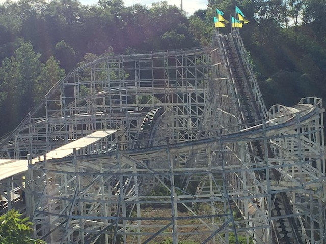
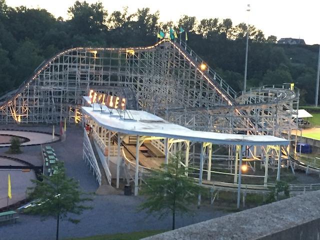
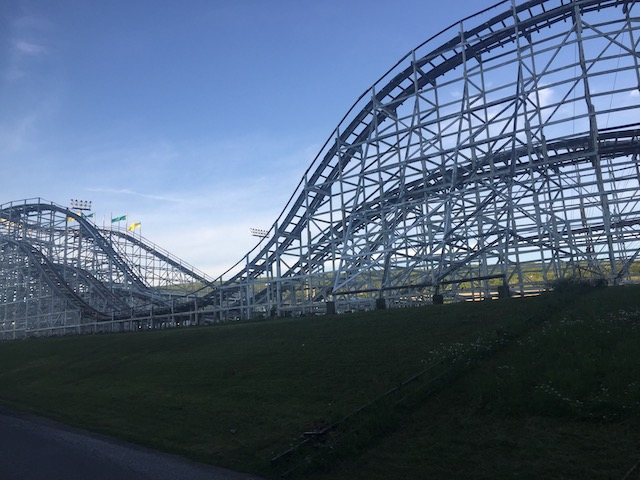
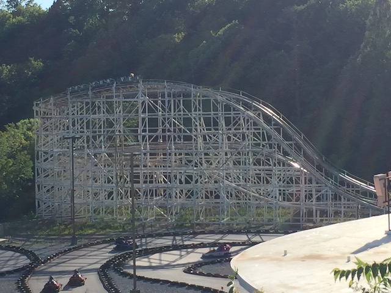
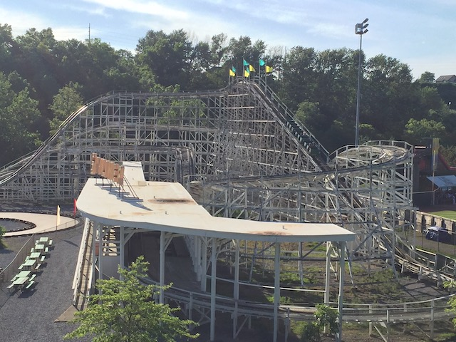
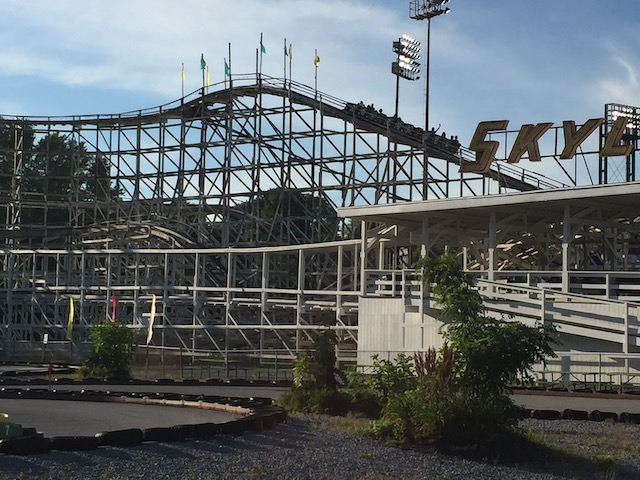
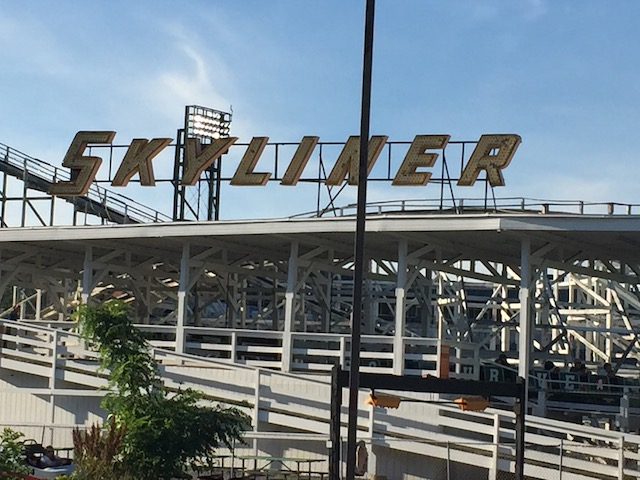

| |
Skyliner Review

We're here at Lakemont Park and todays ride we'll be reviewing is Skyliner. This is both the bigger coaster at Lakemont Park, but also the less historical coaster. Yeah. Skyliner is fairly old as well, having originally come from some other theme park. But....let's keep it real. NO COASTER is topping Leap the Dips as far as ancient quality goes. I'm not sure if people generally consider Skyliner to be the better coaster than Leap the Dips. I get the impression that people love Leap the Dips for its historical value, but putting that aside, view Skyliner more favoribaly. Which....I get. I certainly expected to leave with this opinion. But....NOPE!!! Leap the Dips is better. Maybe that wasn't always the case. But I certainly thought so since.....Skyliner does have some problems. How so? Well, get in the seats, pull down the lap bar (Yeah. Unlike Leap the Dips, this ride has restraints. It'd also probably kill you without them), and we're off! We go around a large turn before climbing up the lifthill. If you're a baseball fan, you're in for a real treat. So Lakemont Park is right next to the Peoples Natural Gas Field Ballpark (I seriously can't get over that name. SUCH A BAD NAME!!!), where the Altoona Curves play. And Skyliner is right at the edge of the park right next to the baseblal field. So much so that the cars read "GO CURVES" (clearly, the baseball field is not the only thing named horribly. So if you're a baseball fan, you get the pleasure of seeing the game for a minute (if a game is going on that day. However, I don't give a f*ck about baseball (or any other sport honestly). So I guess I'll just instead, enjoy the view of the rest of Skyliner and trees. Eventually, we reach the top, and go around a turn. Oh boy. This thing definately feels rickety. And.....WHOA!!! That first drop legitmately gives us a lot of speed and......BUMP BUMP BUMP BUMP BUMP!!! HOLY SH*T!!! THIS RIDE IS ROUGH AS HELL!!! We then rise up a big hill, losing much of our speed before going around another turn and a chance to catch our breath. Yeah. This thing....not gonna lie. Even though it's not Leap the Dips old, still does feel pretty rickety. After catching your breath, head down another drop, gaining back all our speed as we bounce down the drop. Rise back up into another hill. There's a bit of airtime here, though we're jolting so much that it honestly just feels like another pothole since....this ride is FULL OF THEM!!! There aren't too many laterals here since....we aren't going very fast around the turns. Though honestly, it's probably for the best this ride doesn't have laterals. It'd probably break your ribs lol. And just like that, down another drop. JOLT!!! POTHOLE AT THE BOTTOM!!! This ride needs to be retracked BADLY!!! We then head up a smaller hill, and.....WHOA!!! THERE'S AIRTIME HERE!!! Though it doesn't feel like standard airtime. You know the feeling when you drive over a speedbump in a parking lot really fast and....BAM!!! SLAM right over it? That's what this airtime moment on Skyliner feels like, And hey. Some laterals are here. SLAM!!! AND BAM!!! We go down a drop. Though this feels less like a drop and more like a pothole that simaltaneously gives us speed after driving over it. Jump right up into another hill and BAM!!! Around another turn. The laterals are only getting stronger on this ride. Get some headchoppers as we go underneath the turn to the first drop and....BAM!!! Drop down to the ground as we continue to shake and rattle our way through the layout. We go through some straight track (that's probably full of potholes) before we rise up and SLAM around another turn underneath the rides structure. We get more laterals before going down a gradual drop. I guess this to try and comboat the constant jackhammering. Though that fails misreably as there's not a moment on the ride that isn't constantly jackhammering you. Even the straight track has it before SLAMMING UP another small hill and around a turn that gives us some laterals and bruised sides. And with that, we glide right into the station. So yeah. I'm torn on this ride. On the one hand, it's a fast, mean, and AGGRESSIVE coaster. But at the same time, that translates into this ride being ROUGH AS HELL!!!! Seriously, Skyliner is unironically one of the roughest coasters ever. And I could easily see some people comparing the roughness of Skyliner to those of some of the worst coasters ever (at least the worst woodies). So while I don't hate Skyliner or consider it to be unbearable, I can totally understand other enthusiasts hating this ride and TOTALLY see where they're coming from (as opposed to other coasters that some people claim to be rough). Another thing worth noting. It's totally possible that Skyliner used to be WAY SMOOTHER and just got really rough due to poor maintenencec since....I dont think Lakemont Park has the biggest budget. Cause....the ride is currently SBNO along with Leap the Dips. Well, assuming that Skyliner reopens (I certainly hope so), I hope that they give it a proper retracking to make it FAR SMOOTHER so that the ride becomes much better in the future.
5/10
Location: Lakemont Prk
Opened at Roseland Park in 1960
Moved to Lakemont Park in 1987
Built by: Philadelphia Toboggan Coasters
Last Ridden: June 24, 2021
Skyliner Photos






Home
|